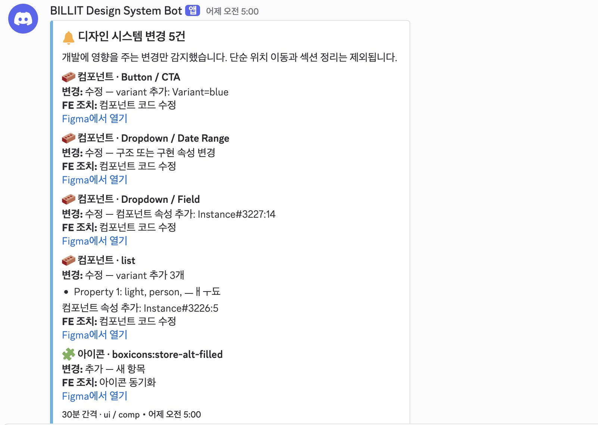
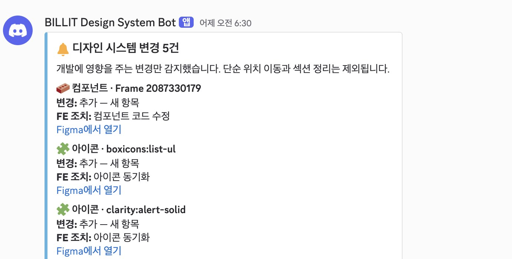

손으로 알리던 디자인 시스템 변경을 자동으로 전달하기
디자인 시스템을 고칠 때마다 직접 쓰던 공지를 자동화했습니다. 실제 알림을 주고받으며 오탐과 누락을 하나씩 줄여간 과정을 담았습니다.
Figma 작업을 끝낸 뒤 공지까지 챙기던 일을, 봇에게 넘겼습니다.
왜 시작했나
디자인 시스템을 고친 날에는 늘 일이 하나 더 남았습니다. 바꾼 값과 Figma 링크를 찾아 Discord 공지로 정리하는 일이었습니다. 작은 변경은 “이따 알려야지” 하다가 빠지기 쉬웠습니다.
모든 차이를 보낼 수도 없었습니다. 위치 이동과 작업용 복사본까지 울리면 중요한 알림이 묻힙니다. 우리가 원한 건 개발팀이 움직여야 할 때만 말하는 봇이었습니다.
목표
- 원본
ui › comp를 30분마다 확인합니다. - 전후 값, Figma 링크, FE 조치를 함께 전달합니다.
- Figma는 읽기 전용으로 유지하고 월 운영비는 0원으로 맞춥니다.
무엇을 만들었나
| AS-IS | TO-BE |
|---|---|
| 디자이너가 변경사항을 찾아 수동 공지 | 손대지 않아도 30분마다 자동 확인 |
| 변경 내용과 링크를 다시 정리 | 전후 값·링크·FE 조치를 한 번에 전달 |
| 위치 이동과 실제 변경을 사람이 판정 | 복사본·좌표·섹션 정리는 자동 제외 |
| 이름 변경과 삭제를 기억에 의존 | Node ID 기반 스냅샷으로 추적 |


배포하고 나니 예상하지 못한 장면이 바로 나왔습니다. 타이포를 건드리지 않았는데 변경 알림이 왔고, 실제로 바꾼 Currency 이름은 조용히 지나갔습니다. 새로 만든 Flag는 아이콘이 아니라 일반 컴포넌트로 소개됐습니다. “알림이 왔는가”보다 “무엇이라고 알렸는가”가 더 중요하다는 걸 그때 알았습니다.
그 뒤부터 실제 오류를 테스트 케이스로 남겼습니다. 스타일 값과 사용처를 분리하고, 기준선을 바꿔도 이전 이름을 이어받게 했습니다. Flag·Currency·Logo는 에셋으로 따로 보고, variant는 Type=small 추가처럼 달라진 부분만 보여줍니다.
결론
처음에는 알아서 자동화를 하면 될 거라 생각했는데, 실제로는 오탐이 많았고 정확성을 높이는 것도 중요했습니다.